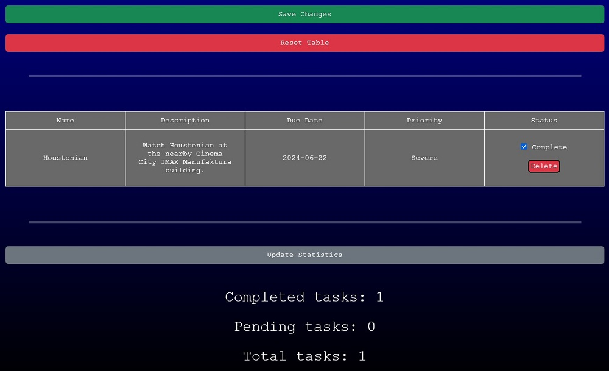

ABOUT US!
Samuel Bars has grown up on hundreds of movies. He was amazed by their ability to tell stories purely visually, even if they lack dialogue. Thus, he became a cinematographer in order to allow others to witness what he witnesses.
Yet, he is overwhelmed by the great amount of movies releasing in the modern age. How can he possibly keep track of all of them? He came up with a plan.
One day, he was in Warsaw, Poland, and heard of a restaurant chain known as The Polish. Taking interest in the elegant simplicity of the chain's website, he contacted its developer, who lived all the way in Łódź, Poland.
After many drinks and stories shared between them, Jalen Ansel Yamazanan Shalom agreed to develop the Cineschedule website.
Yet, Bars questioned where to begin if he wanted to share this website to the world. How should one market this? Who should market this? Fortunately, he found the answer.
He contacted Bro Jameson, whose band Bonusmen had previously composed music for his film Houstonian. Bars knew Jameson was the right guy for the job, and Jameson happily agreed to market the Cineschedule website.
Through the task form, you may insert the name of the task, a description (if you wish), the due date by which you expect to be done with the task, and the priority level.

You will be asked to confirm your creation of the task.
From there you can check off tasks as complete, as well as delete individual tasks.
It is strongly recommended to use the "Save Changes" button after every action, whether creating tasks, checking them off, or deleting them. It is also recommended to click the "Update Statistics" button after every action, though it is not as urgent, and changes will be seen upon page refresh anyway.
Additionally, there is a "Reset Table" button. However, that is best used if something goes very wrong with the table, as it will reset the table to factory settings. If you click it, a safety confirmation prompt will appear, though do note that if you do confirm it, you cannot reverse your decision.
You may contact us through the Contact page if you have any further questions.
WHO ARE WE?
Samuel Bars |
Hails from Scotland. Works as a cinematographer for various films around the world, most notably for the 2024 film Houstonian, which he also directed. Conceptualized the design of the Cineschedule website and spearheads its development. | |
Jalen Ansel Yamazanan Shalom |
Hails from Poland. Graduated from the University of Warsaw with a Bachelor's Degree in Computer Science. Was employed as a junior web developer for a large Polish restaurant chain, which caught the eye of Samuel Bars, who subsequently hired him for the Cineschedule website. | |
Bro Jameson |
Born and raised in the United States. Known for being the frontman of the band Bonusmen, who have composed the soundtrack for Samuel Bars' film Houstonian. Jameson's energetic personality was of particular interest of Samuel Bars, and so he now serves as the primary marketer of the Cineschedule website. |